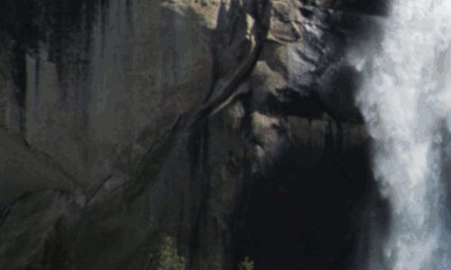

First

Second

Third
First time, as each image appears, the circles/squares are as follows: red, transparent, black.
Second time, the circles/squares are as follows: transparent, red, transparent.
Third time, the circles/squares are as follows: black, red, black.
Fourth time, the circles/squares are as follows: red, black, red.
First
Second
Third
Each picture is a quadrant of the image shown below:

First this image appears at far right of screen, with blue background.
Next this image appears to the left of the above image, with white background.
Next this image appears below the above image, with yellow background.

Next this image appears to right of the above image, with green background.
Note that this sequence overlaps, time wise, with the sequence in the following step.
Each quadrant of the image is replaced by a gray rectangle, filled with a different background color. Only one quadrant at a time is covered by the rectangle.
First this rectangle image appears at the upper right of screen, with blue background.
Next, the rectangle moves to cover the quadrant in the upper left, with a white background.
Next, the rectangle moves to cover the lower left quadrant, with a yellow background.
Finally, the rectangle moves to cover the lower right quadrant, with a green background.
The sequence of the waterfall image from the previous step followed by the rectangles covering the image repeats a total of 5 times.